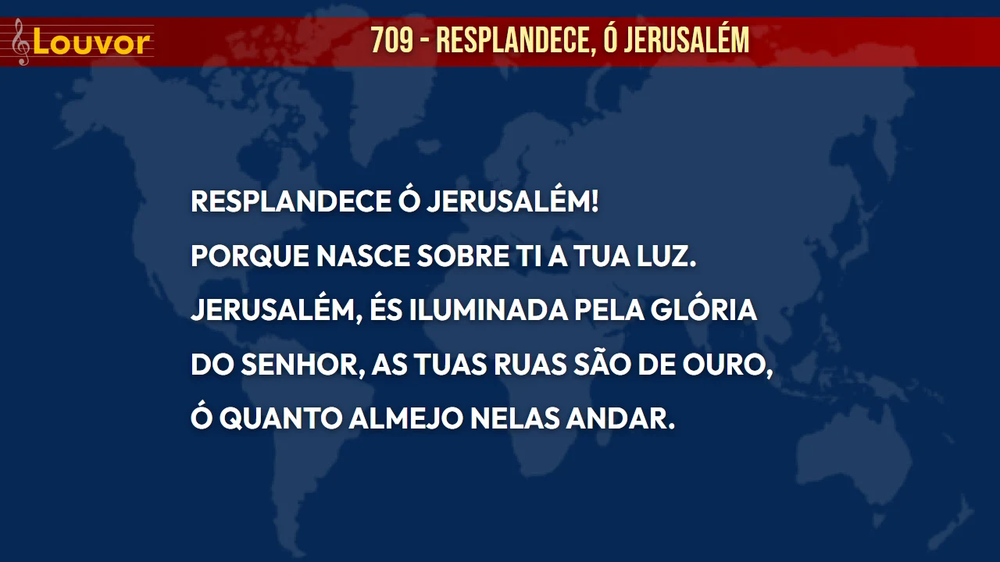
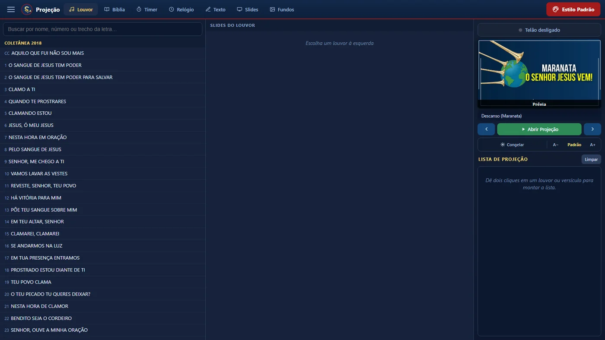
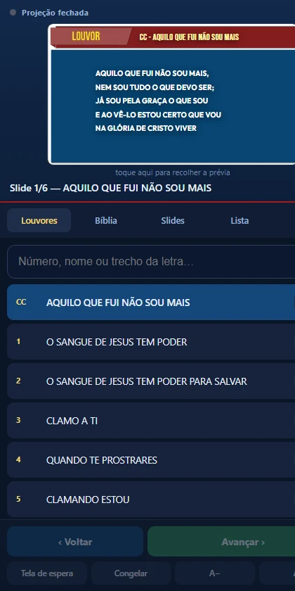
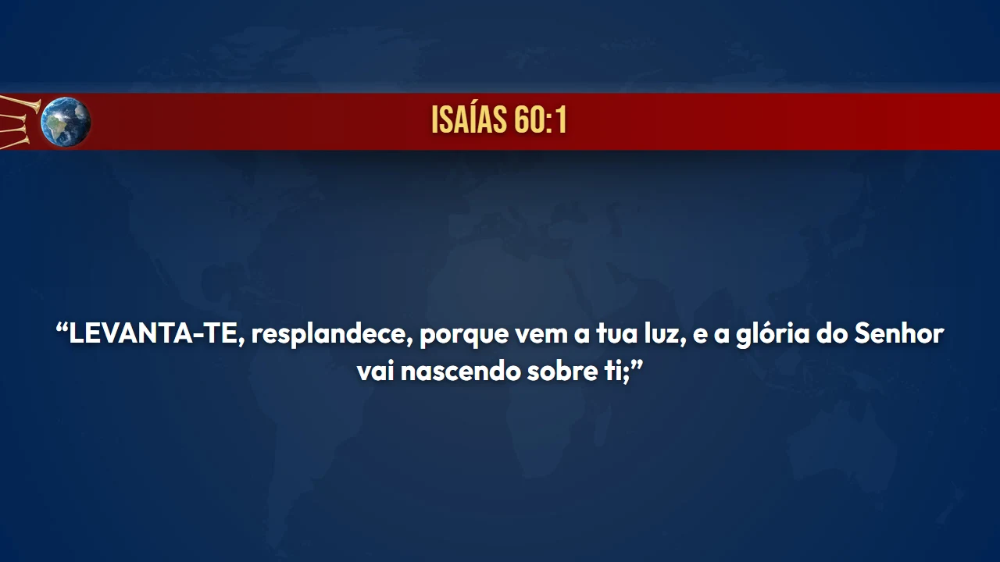

Louvores, Bíblia, avisos, cronômetro e os slides da Escola Bíblica. Funciona sem internet e roda em computador fraco.
Gratuito, para qualquer igreja.

Os três instalam o mesmo programa. A diferença é o que vem junto — e a listinha de cada um diz tudo.
Para o computador que vai projetar o culto. Um arquivo só, dois cliques: ele se abre e se instala sozinho, sem depender de internet.
O programa para projetar: louvores, Bíblia e fundos. É o suficiente para a projeção do culto acontecer.
É só o arquivo instalador — por isso é tão pequeno: ele baixa o Sistema da nuvem na hora de instalar. Cabe no WhatsApp.
A coletânea inteira já vem dentro. Busque pelo número, pelo nome ou por um trecho da letra — e ele acha mesmo se você escrever errado.
Projete um versículo ou vários de uma vez, com a referência na faixa e o texto inteiro, sem abreviação.
Comande a projeção do banquinho do grupo de louvor. Não precisa de internet: basta os dois estarem na mesma rede.
Abra o PowerPoint ou o PDF que a igreja mandou e projete slide a slide, como um louvor.
Escreva um aviso na hora, ou marque o tempo da oração na tela, para todos verem.
Quando sai versão nova, o programa avisa e se atualiza com um clique — baixando só o programa, nunca o conteúdo pesado de novo.
A tela do operador fica no computador. A congregação só vê o telão.

O celular vira controle da projeção inteira: passa os slides, monta a lista dos louvores do culto, projeta os versículos que o pastor citar e ainda mostra a cifra no caderno do seu instrumento — tudo sem tirar o violão do colo, e sem gastar um tostão de internet.
Para conectar, é só apontar a câmera do celular para o QR Code que aparece no menu do programa, em Configurações → Celular. Da segunda vez em diante, o navegador já lembra o caminho.

Na hora da mensagem, o versículo sobe ao telão com a mesma letra grande e limpa que se lê do fundo do salão, no desenho que a igreja já conhece — a faixa com a referência em cima e o texto inteiro embaixo, sem abreviação.

E há quem diga que, quando a palavra sobe ao telão, o Sistema sabe entregar ao operador o louvor certo para aquela hora — como quem conhece a igreja há anos. Nós não vamos explicar. Instale e repare.